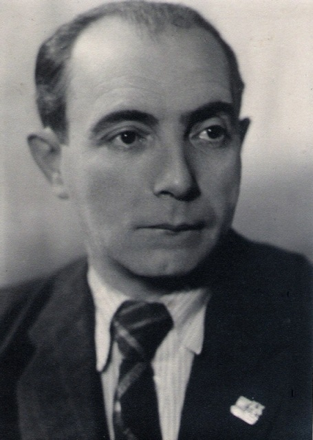

 Аршанский Эдуард Львович Arshansky Edward Lvovich Аршанская Эдуард Львовіч
Эдуард Львович Аршанский (Оршанский) (25 августа 1899, Невель, Витебская губерния — 6 июля 1974, Ленинград) — белорусский советский режиссёр, сценарист.Театральный режиссер в 1917—1927 и в 1941—1949 годах. В 1919—1920 руководил передвижными театральными труппами на фронтах Гражданской войны. В 1917—1927 работал в театрах Ленинграда, в рабочих клубах в Витебске. Edward Lvovich Arshansky (Orshansky) (August 25, 1899, Nevel, Vitebsk Province - July 6, 1974, Leningrad) - Belarusian Soviet director, screenwriter. Theater director in 1917-1927 and 1941-1949. In 1919-1920 led the mobile theater troupe on the fronts of the Civil War. In 1917–1927, he worked in theaters in Leningrad, in workers' clubs in Vitebsk. Эдуард Львовіч Аршанская (Аршанскі) (25 жніўня 1899, Невель, Віцебская губерня - 6 ліпеня 1974, Ленінград) - беларускі савецкі рэжысёр, сценарист.Театральный рэжысёр у 1917-1927 і ў 1941-1949 гадах. У 1919-1920 кіраваў перасоўнымі тэатральнымі трупамі на франтах Грамадзянскай вайны. У 1917-1927 працаваў у тэатрах Ленінграда, у працоўных клубах у Віцебску.
Список работ: List of Works: Списак работ:
- 1930 Переправа вплавь Crossing the water Пераправа ўплаў
- 1931 Кто лучше? Who is better? Хто лепш?
- 1932 Боям навстречу Fighting towards Баях насустрач
- 1933 Дважды Рожденный Twice Born Двойчы народжаны
- 1935 Новая Родина New Motherland Новая Радзіма
- 1937 Соловей The Nightingale ... Салавей ...
- 1955 По новым путям On New Ways Па новых шляхах
- 1960 Спортивная юность Sporting youth Спартыўная юнацтва
{kind=link}
{kind=link}